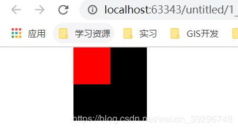

文章归档:
相关资料关注公众号后获取：

CSS-margin塌陷、margin合并
时间：2020-3-2
摘要：本次博客主要记录两个经典css的bug：margin塌陷与margin合并。
在讲这个两个问题之前我们先用html与css构建一个黑色的方框包裹一个红色方框的效果以便于后续的对比
<div class="wrapper"> <div class="box"></div> </div> /*css部分*/： *{ padding: 0; margin: 0; } .wrapper{ width: 100px; height: 100px; margin-left: 100px; background-color: black; } .box{ width:50px; height: 50px; background-color: red; }
效果：
一、Margin塌陷
1.1、问题描述
我们在上述代码上在红色方框的css中添加：margin-left：50px；也就是期望红色的方框在黑色方框中向右平移50px：
.box{ margin-left:50px; width:50px; height: 50px; background-color: red; }
效果：
我们会发现渲染效果并不是和我们预想的一样，而是直接带着黑色方框一起向下平移了50px。这个渲染效果与我们设想效果的不一致就是margin塌陷造成的。 margin塌陷其实是一种很形象化的说话。把margin-top看作一个顶棚。黑色的顶棚在红色的顶棚上面。本来红色的顶棚是要相对于黑色下移的，但是黑色的顶棚塌了，所以红色就直接相对于浏览器下移了。
1.2、解决办法
1)顶棚塌陷了修好顶棚：在黑色方框的css上加上：border-top:1px solid black。
.wrapper{ width: 100px; height: 100px; margin-left: 100px; background-color: black; border-top:1px solid black; }
这个方法看上去就不太好。在公司里一般代码审核不能通过
2)触发BFC：
凡是带有以下属性中的一种或几种的元素，都能改变margin塌陷的问题：
1)position：absolute;2）display：inline-block;3）float：left/right;4）overflow:hidden
比如在黑色方框中加上overflow: hidden:
.wrapper{ overflow: hidden; width: 100px; height: 100px; margin-left: 100px; background-color: black; }
上述两种解决办法的效果：
二、Margin合并
2.1、问题描述
比如以下两个盒子，左边的margin-right：50px；右边的margin-left：60px：最后两者之间的间距为60px。这就是margin合并（取二者的最大值）：
2.2、解决办法
margin合并无需解决，计算好两个盒子之间的间距就行。